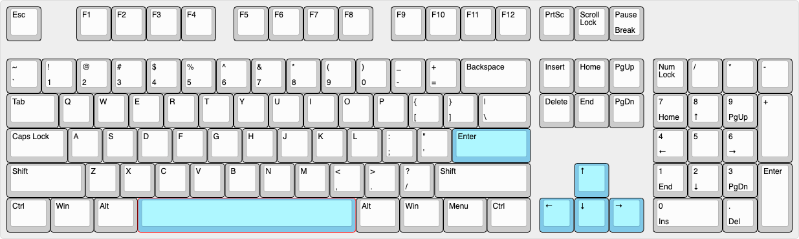
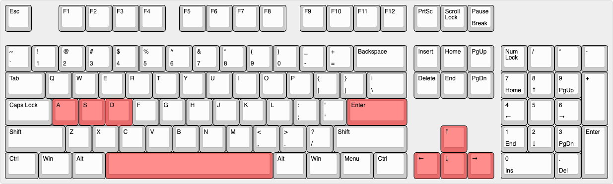

Ayuda
 El convoy de los Aliados formado por el destructor y seis cargueros norteamericanos, debe cruzar el Océano
Atlántico desde América hasta Europa.
El convoy de los Aliados formado por el destructor y seis cargueros norteamericanos, debe cruzar el Océano
Atlántico desde América hasta Europa.En el camino, un submarino perteneciente a las potencias del Eje intentará hundirlos.
Una vez seleccionada la opción Comenzar Partida del menú principal, seleccionar dificultad, ingresar el nombre de jugador y
seleccionar el tipo de embarcación. Luego presionar el botón Comenzar.

Si elegiste al Equipo de la Alianza, manejarás al Destructor.
Usá las flechas del teclado para desplazarte a través del Océano Atlántico y escapar del ataque del submarino rival.
Disparar cañón: Hacés click con el puntero del mouse para apuntar al objetivo y luego disparás con la tecla ESPACIO. El submarino es hundido si es alcanzado por la bala de cañon.
Disparar cargas de profundidad: Para disparar cargas de profundidad usá la tecla ENTER. La carga queda depositada en el oceano, y se esconde a los pocos segundos. Si el submarino pasa por donde fue depositada la carga, y esta a la misma profundidad, la carga explota, hundiendo al submarino.
Si elegiste al Equipo de la Alianza, manejarás al Destructor.
Usá las flechas del teclado para desplazarte a través del Océano Atlántico y escapar del ataque del submarino rival.
Disparar cañón: Hacés click con el puntero del mouse para apuntar al objetivo y luego disparás con la tecla ESPACIO. El submarino es hundido si es alcanzado por la bala de cañon.
Disparar cargas de profundidad: Para disparar cargas de profundidad usá la tecla ENTER. La carga queda depositada en el oceano, y se esconde a los pocos segundos. Si el submarino pasa por donde fue depositada la carga, y esta a la misma profundidad, la carga explota, hundiendo al submarino.

Si elegiste al Equipo Potencias del Eje, manejarás al Submarino.
Usá las flechas del teclado para desplazarte a través del Océano Atlántico y encontrar al destructor para hundirlo.
Disparar cañón: Hacés click con el puntero del mouse para apuntar al objetivo y luego disparás con la tecla ESPACIO. El destructor es hundido si es alcanzado por la bala de cañon.
Disparar torpedos: Estando semi-sumergido, podes disparar los torpedos del submarino presionando la tecla ENTER. El destructor es hundido si es alcanzado por uno de tus torpedos.
Sumergirte: Con el submarino podés sumergirte bajo el agua. Esto lo realizarás con las teclas:
A - superficie, S - semi-sumergido y D - sumergido profundo.
Si elegiste al Equipo Potencias del Eje, manejarás al Submarino.
Usá las flechas del teclado para desplazarte a través del Océano Atlántico y encontrar al destructor para hundirlo.
Disparar cañón: Hacés click con el puntero del mouse para apuntar al objetivo y luego disparás con la tecla ESPACIO. El destructor es hundido si es alcanzado por la bala de cañon.
Disparar torpedos: Estando semi-sumergido, podes disparar los torpedos del submarino presionando la tecla ENTER. El destructor es hundido si es alcanzado por uno de tus torpedos.
Sumergirte: Con el submarino podés sumergirte bajo el agua. Esto lo realizarás con las teclas:
A - superficie, S - semi-sumergido y D - sumergido profundo.
Si elegiste al Submarino, tenés que destruir a 4 cargueros.
Si elegiste al Destructor ganás al destruir al submarino, o si 3 de tus cargueros cruzan al otro lado del mapa.
Si un jugador presiona el botón CANCELAR PARTIDA, perderá el juego y el otro se llevará la victoria.
En caso de que se acabe el tiempo de juego, se considera EMPATE de ambos jugdores.
Si elegiste al Destructor ganás al destruir al submarino, o si 3 de tus cargueros cruzan al otro lado del mapa.
Si un jugador presiona el botón CANCELAR PARTIDA, perderá el juego y el otro se llevará la victoria.
En caso de que se acabe el tiempo de juego, se considera EMPATE de ambos jugdores.